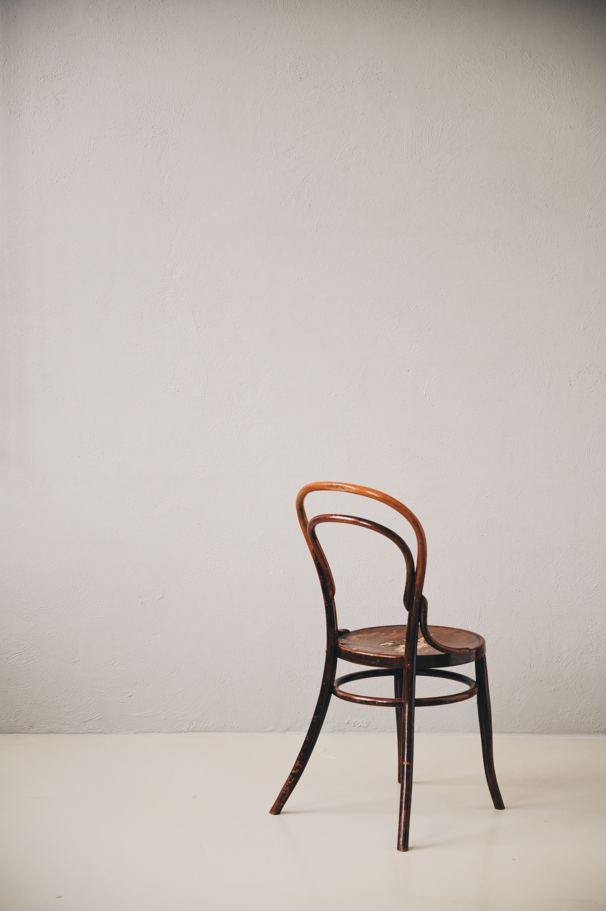

Thonet Stuhl Nr. 14

Vorher / Before
Möbel waren handgefertigt, teuer und selten. Ein Stuhl war ein Besitzstück, das vererbt wurde.
Furniture was handmade, expensive and rare. A chair was a possession passed down through generations.
Nachher / After
36 zerlegte Stühle in einer Transportkiste. Massenproduktion macht Möbel für alle erschwinglich — und austauschbar.
36 disassembled chairs in one crate. Mass production makes furniture affordable for all — and replaceable.
Serielle Logik: Der erste in Serie gefertigte Gebrauchsgegenstand der Welt — der Beginn einer neuen Beziehung zwischen Objekt, Raum und Mensch. / Serial logic: The world's first mass-produced everyday object — the beginning of a new relationship between object, space and people.